snook
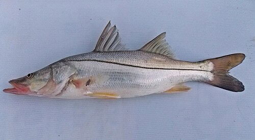
File:Centropomus undecimalis Mexico.jpg
picked by hand
CC BY-SA 4.0
red-drum
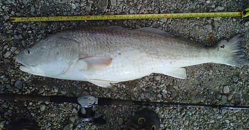
File:BullRedTCDMo2May2011.jpg
picked by hand
CC BY-SA 3.0
seatrout
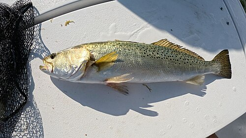
File:Gefleckte Seeforelle.jpg
picked by hand
CC BY-SA 4.0
black-drum
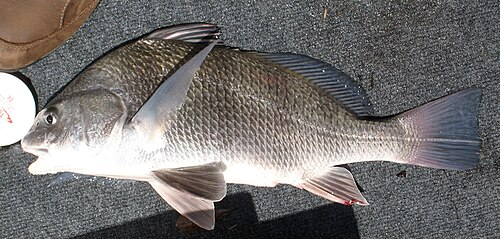
File:Pogonias Cromis 2010-05-28.jpg
picked by hand
CC BY-SA 3.0
sheepshead
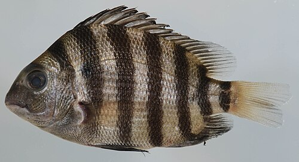
File:Archosargus probatocephalus (S0966) (12599982853).jpg
picked by hand
CC BY 2.0
flounder

File:Paralichthys lethostigma.jpg
picked by hand
Public domain
pompano
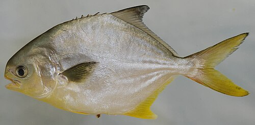
File:Trachinotus carolinus (S0970) (12591792133).jpg
picked by hand
CC BY 2.0
mullet
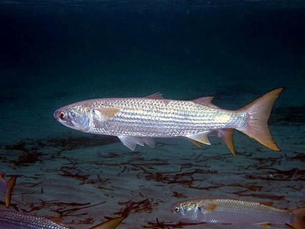
File:Mugil cephalus Minorca.jpg
picked by hand
CC BY 3.0
tripletail
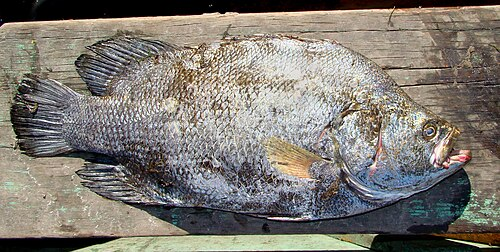
File:Lobotes surinamensis1.jpg
picked by hand
CC BY-SA 2.0
bluefish
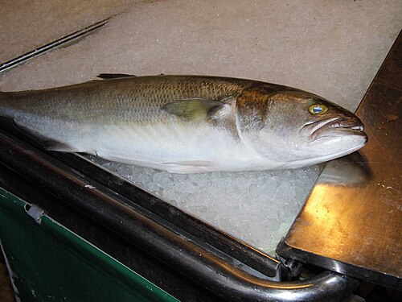
File:Pezzo Grosso - panoramio.jpg
picked by hand
CC BY 3.0
spanish-mackerel
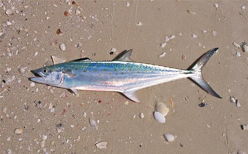
File:Scomberomorus maculatus 1.jpg
picked by hand
CC BY 3.0
king-mackerel
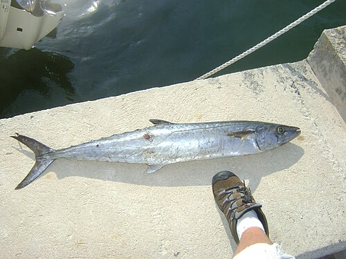
File:King Mackerel.JPG
picked by hand
CC BY-SA 3.0
cobia
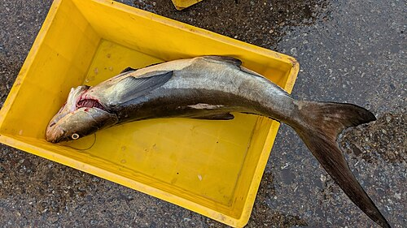
File:Rachycentron canadum 502110084.jpg
picked by hand
CC BY 4.0
barracuda
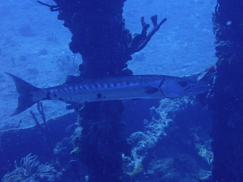
File:Sphyraena barracuda 421130658.jpg
picked by hand
CC BY 4.0
spot-croaker

File:Spot ( Leiostomus xanthurus ).jpg
picked by hand
Public domain
sand-seatrout
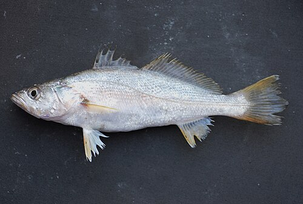
File:Cynoscion arenarius.jpg
picked by hand
Public domain
dolphinfish
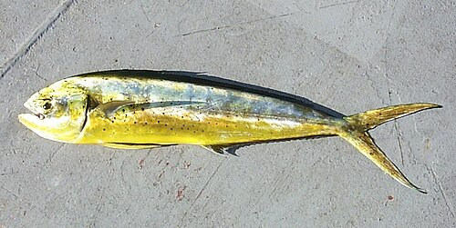
File:Dolphinfish (Coryphaena hippurus).jpg
picked by hand
Public domain
wahoo
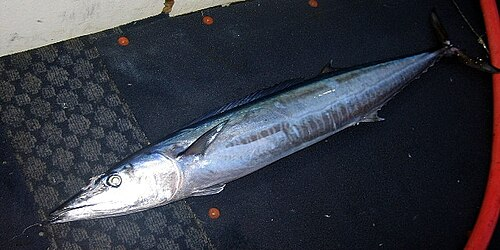
File:Obs wahoo3.jpg
picked by hand
Public domain
gag
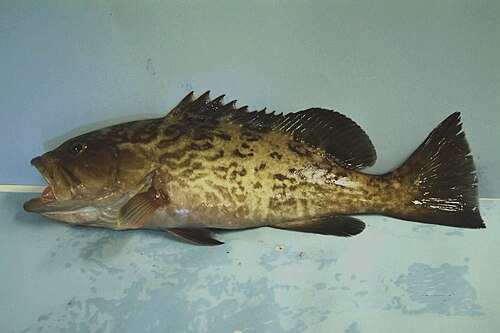
File:Fish4335 - Flickr - NOAA Photo Library.jpg
picked by hand
Public domain
black-grouper
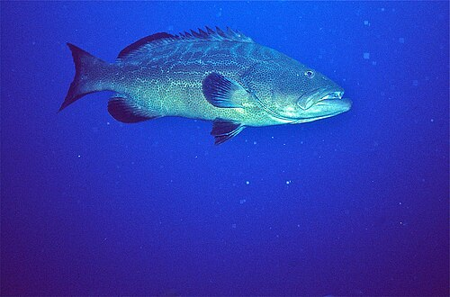
File:Black Grouper (Mycteroperca bonaci) (36552107911).jpg
picked by hand
CC BY-SA 2.0
red-grouper

File:Epinephelus morio1.jpg
picked by hand
Public domain
scamp
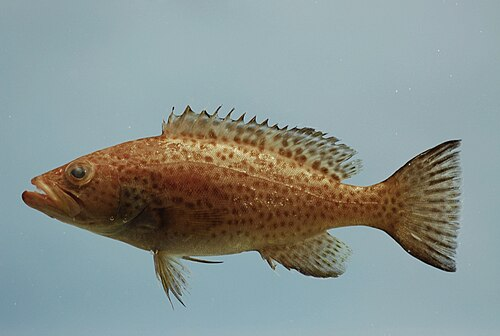
File:Juvenile scamp ( Mycteroperca phenax ) NOAA.jpg
picked by hand
Public domain
grouper-other
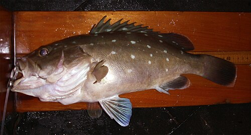
File:Epinephelus niveatus NOAA.jpg
picked by hand
Public domain
hogfish
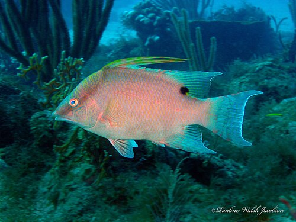
File:Lachnolaimus maximus 170363478.jpg
picked by hand
CC BY 4.0
triggerfish
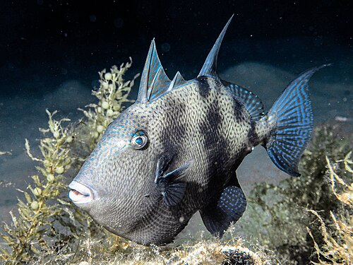
File:Grey Trigger fish.jpg
picked by hand
CC BY-SA 4.0
greater-amberjack
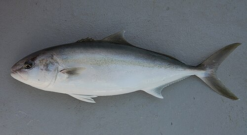
File:Fish4446 - Flickr - NOAA Photo Library.jpg
picked by hand
Public domain
lesser-amberjack
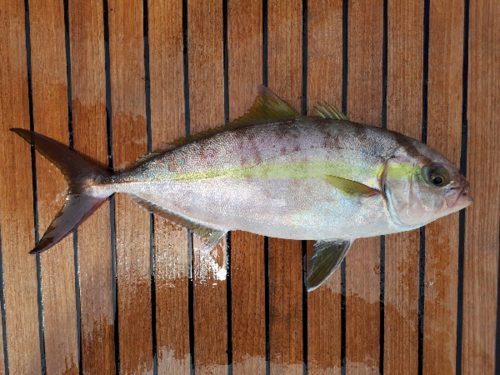
File:Seriola fasciata.png
picked by hand
CC BY 3.0
black-sea-bass
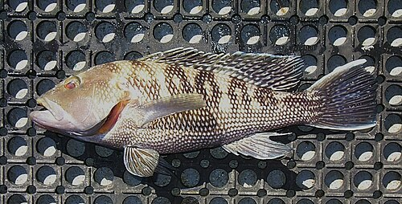
File:Centropristis striata.jpg
picked by hand
Public domain
red-porgy

File:Pagrus pagrus.jpg
picked by hand
Public domain
tilefish

File:Lopholatilus chamaeleonticeps2.jpg
picked by hand
Public domain
red-snapper

File:Red Snapper.jpg
picked by hand
CC BY-SA 3.0
lane-snapper

File:Lutjanus synagris.jpg
picked by hand
Public domain
vermilion
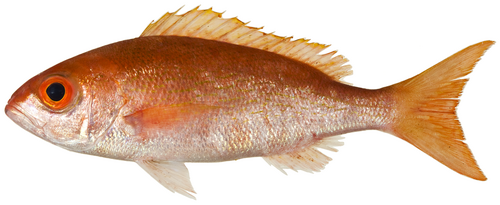
File:Rhomboplites aurorubens - pone.0010676.g087.png
picked by hand
CC BY 2.5
gray-snapper
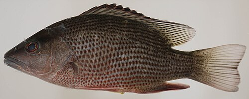
File:Lutjanus griseus (S0624) (12596775395).jpg
picked by hand
CC BY 2.0
mutton-snapper
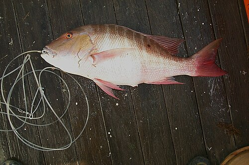
File:Lutjanus analis.jpg
picked by hand
Public domain
cubera-snapper
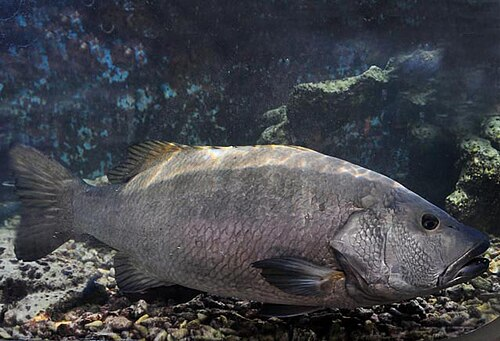
File:Lutjanus cyanopterus SI2.jpg
picked by hand
Public domain
other-snappers
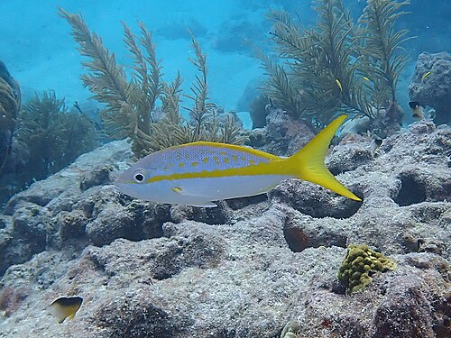
File:Ocyurus chrysurus Florida Keys.jpg
picked by hand
CC0
stone-crab
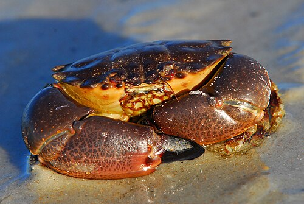
File:Juvenile Stone Crab ( Menippe mercenaria ) - Flickr - Andrea Westmoreland.jpg
picked by hand
CC BY-SA 2.0
blue-crab
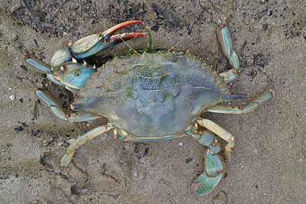
File:Blaukrabbe Callinectes sapidus 2.jpg
picked by hand
CC BY 3.0
lobster
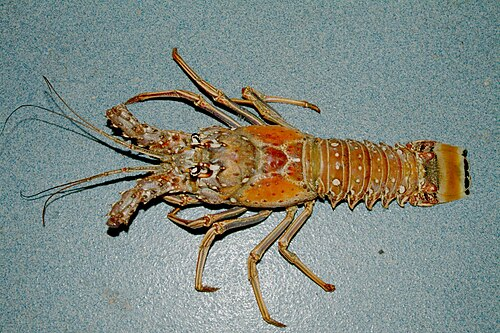
File:Panulirus argus NOAA.jpg
picked by hand
Public domain
shrimp
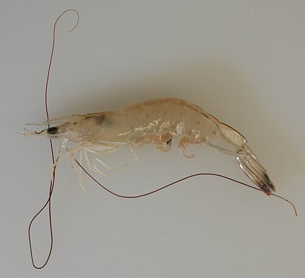
File:Litopenaeus setiferus (I0142) (13048551453).jpg
picked by hand
CC BY 2.0
permit-pompano
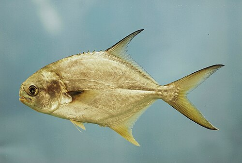
File:Fish4502 - Flickr - NOAA Photo Library.jpg
picked by hand
Public domain
lionfish
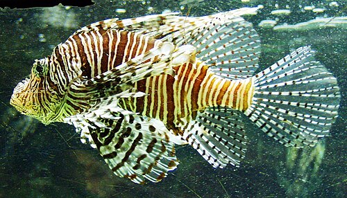
File:Pazifischer Rotfeuerfisch - Red lionfish - Pterois volitans.jpg
picked by hand
CC BY-SA 4.0
unregulated
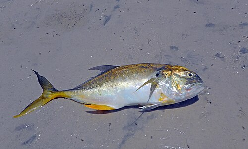
File:Jack crevalle - Oleta River State Park.jpg
picked by hand
CC BY-SA 4.0
tarpon
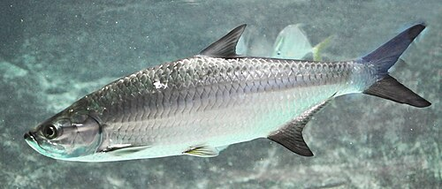
File:Megalops atlanticus.jpg
picked by hand
CC BY-SA 3.0
bonefish
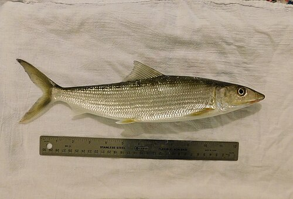
File:Albula vulpes form.jpg
picked by hand
CC0
goliath
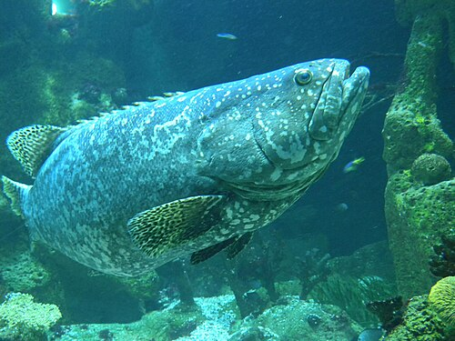
File:140806 HausDesMeeres 141 (14659739279).jpg
picked by hand
CC BY 2.0
nassau

File:Nassau grouper (13002589674).jpg
picked by hand
CC BY 2.0
oysters
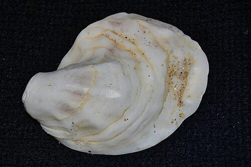
File:Eastern Oyster (Crassostrea virginica) Top (16116198647).jpg
picked by hand
CC BY 2.0